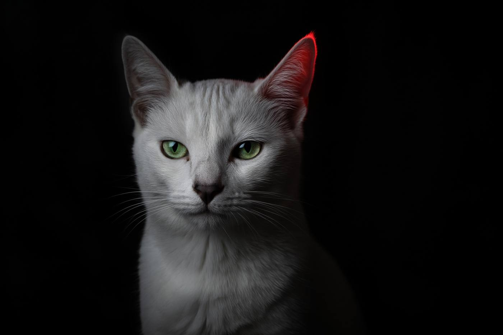
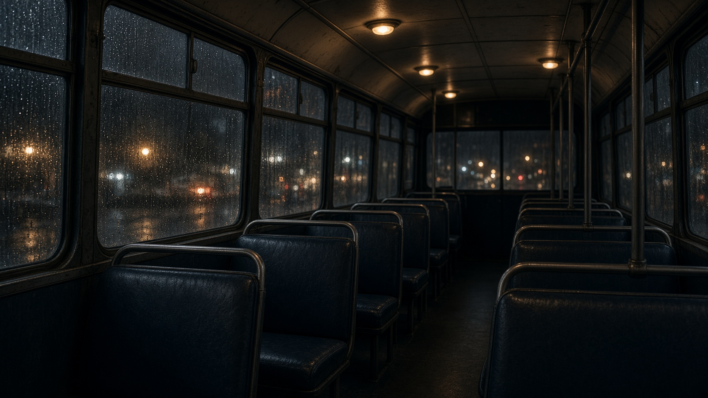

Artı derece ufkun üstünü, eksi derece görünür ufkun altını anlatır.
GECE VARDİYASI / STÜDYO 001 AÇIK · ISTANBUL
Build.Learn.Repeat.
This is my own little space on the web..

KİŞİSEL ARŞİV / 001
Ergin Kaplan
İstanbul · kod, ses ve gece kayıtları
YÖN / MERAK
İSTANBUL · 41°00′N 28°56′E
BU GECE DE KAYIT AÇIK
01 / AÇIK VERİ · İSTANBUL HATTI
Şehrin nabzı şimdi.
Hava, ışık penceresi, ay, hava kalitesi, basınç nefesi, sismik nabız ve yörünge. İstanbul için Ergin Lab atmosfer kokpiti.
00 / YENİ GÖKYÜZÜ DOSYASI · SAMATYA TOPOS
GÖZLEM NOKTASI SABİT41.0028° K · 28.9404° D
Gökyüzü,
Samatya’dan başlar.
Samatya'nın ufkunu merkez alan bir gök atlası. Yıldızların ve gezegenlerin hangi yönde göründüğünü, ufkun ne kadar üstünde kaldığını ve ışıklarının bize yaklaşık ne kadar sürede ulaştığını keşfet.
Bakışını seç. Bir cismi bul. Zamanı değiştir. Gökyüzü yeniden hesaplansın.
KEPLER HESABIIŞIK YOLCULUĞUYEREL UFUK3B GÖK ATLASI
Azimut kuzey 0°, doğu 90°, güney 180° ve batı 270° üzerinden okunur.
Işık süresi, hesaplanan uzaklıktan ışığın bize yaklaşık geliş süresidir.
Not: Bu, yörünge maketi değil; Samatya'dan görünen gök yönlerinin yaklaşık ve ölçek dışı bir atlasıdır.
EL / SAMATYA TOPOSMAHALLE ÖLÇEĞİNDE BİR GÖKYÜZÜ DEFTERİMERAK İÇİN AÇIK
01 / ERGİN LAB · EK-SAMATYA-001
Samatya'da gökyüzü defteri.
50TÜR / KAYIT
KIYI · GÖÇ · KENT
Marmara kıyısında görülebilecek kuşların mevsim, saat, yaşam alanı ve bilimsel adlarla tutulmuş rehberi. Türleri ara, ay penceresini oku, kendi gözlem notunu tarayıcında sakla.
SAHA REHBERİ / 001
50 tür. 12 ay. Tek kıyı.
Türkçe ve bilimsel adlar, göç durumu ve yıl içindeki hareket yoğunluğu. Tam rehberde türleri arayıp kıyı, göç ve kent gruplarına göre süzebilir, gözlem notlarını bu cihazda tutabilirsin.
12AYLIK PENCERE5EKOLOJİK GRUP0GEREKLİ HESAP
TABLODAN BİR KESİT
Kıyıdan gökyüzüne
| Tür / bilimsel ad | Durum | Sıklık | Oca → Ara |
|---|---|---|---|
| Gümüş MartıLarus michahellis | Yerli | Sık | |
| Gri BalıkçılArdea cinerea | Yerli | Düzenli | |
| YalıçapkınıAlcedo atthis | Kış konuğu | Seyrek | |
| LeylekCiconia ciconia | Geçit | Seyrek | |
| BıldırcınCoturnix coturnix | Geçit | Seyrek |
Ay çizgileri, kaynak verideki 0–3 aylık görülme düzeyini gösterir. Gerçek zamanlı gözlem sayımı değildir.
 AYRI ARŞİV / ERGİN’İN SAMATYA DEFTERİSamatya: eski bağım, yeni evim.Çocukluktan bugüne · Bizans · Osmanlı · kiliseler · kıyının hafızası ↗Fotoğraf: Szoszv · CC BY 3.0
AYRI ARŞİV / ERGİN’İN SAMATYA DEFTERİSamatya: eski bağım, yeni evim.Çocukluktan bugüne · Bizans · Osmanlı · kiliseler · kıyının hafızası ↗Fotoğraf: Szoszv · CC BY 3.0EK-SAMATYA-001Tür verisi · mevsim · saatERGİN LAB / KUŞ HATTI
02 / WORKBENCH
GECE DEFTERİ · İSTANBULİşler, fikirler,
izler.
Hiçbiri kendini olduğundan büyük göstermiyor. Araç kendini övmez; işe yaradığı yer kadar yer kaplar.
Burası, merakın elle tutulur hâle geldiği küçük deneyler için. Bazen bir satır kod, bazen bir koruma katmanı, bazen de gece yarısı akla düşen bir “peki ya şöyle olursa?” sorusu.
Küçük denemeler.
Gerçek sorular. 07 AÇIK DEFTER
YAPIM HÂLİNDE
Gerçek sorular. 07 AÇIK DEFTER
YAPIM HÂLİNDE
ERGİN LAB / NO. 02MERAK → PROTOTİP → NOT
AÇIK DEVRE / MERAK AKTİF
Biraz gece, biraz deneme-yanılma. Gerisi kayda geçsin.
01 İZİNLE KEŞFET02 ÖNCE YERELDE DENE03 BİLMEDİĞİNİ NOT ET
KÜÇÜK ARAÇLAR / FARKLI NİYETLER
Masadaki işler.
Altı proje. Altı ayrı merak. Hiçbiri bitmiş olmak zorunda değil.
01 / LOCAL SCAN
VeilCheck
Kodun içinde unutulmuş sır işaretlerini arar. Dosyayı dışarı taşımaz; bulduğunu ifşa etmek yerine işaret eder.
02 / HEADER STUDY
GreySignal
Bir adresin yanıt başlıklarını okur. Eksik tabelayı otomatik olarak açık kapı ilan etmez.
03 / RECON
ReconX
İzin verilen keşfi okunur rapora dönüştürür. Davetiye yoksa kapı da yok.
04 / OFFLINE LAB
local-sqli-lab
SQL enjeksiyonunu internete çıkmadan, küçük bir SQLite masasında anlatır. Öğrenme alanı kontrollüdür.
05 / AI CORE
Tigerk
Yapay zekâya odaklanan bir geliştirme alanı. Ağın iskeleti, deneyler ve mimari notları açık ilerliyor.
06 / BIOMATERIALS LAB
MycelForge · Miselyum atölyesi
Tarımsal atıklardan miselyum biyomalzemeleri için formül adayları ve deney protokolleri üretir. Bilimsel ölçümün yerini almaz; araştırmaya bir başlangıç noktası sunar.
07 / DEFENSIVE SECURITY
Savunma Anatomisi · kullanıcı & yönetici
Kişisel hesaptan sistem odasına: parola ve kimlik koruması, oltalama sinyalleri, web güvenliği, yönetici erişimi, yedekleme ve olayın ilk saati için savunma rehberi.
Tigerk · ENGINEERING REASONING / EL-2945
Kodun arkasındaki kararı gör.
İstek önce niyet katmanından geçer; ardından yerel bilgi indeksi ve mühendislik playbook’ları devreye girer. Ağ burada eğitilir, durum bu tarayıcıda kalır. Tasarım kararı, hata izi veya API sözleşmesi ver; analiz hattını başlatalım.
Bir kontrat, hata izi veya tasarım kararı bırak. Tigerk; olası nedenleri, riskleri ve doğrulama adımlarını yapılandırır.
Ergin Lab duruyor ↗ — Taskflow, Calc Lab, Skyline, Tempo. Öğrenme parçaları, vitrin değil.
03 / FELINE FIELD STATION
Her kedinin bir evreni.
Irk tahmini yapan bir sihirli kutu değil. Tüy, görünüş, karakter ve fotoğraf renklerinden kişisel bir kedi dosyası çıkaran küçük bir saha istasyonu.

FIELD NOTEFEL-001
Örnek portre · kendi fotoğrafınla değiştir
01 / KAYITCANLI ÖNİZLEME
02 / DIŞ GÖRÜNÜŞİŞARETLE
03 / KARAKTEREVDEKİ HÂLİ
Fotoğraf bu tarayıcıda işlenir; sunucuya yüklenmez.
LOCAL FIRST · FOTOĞRAF GÖNDERİLMEZ · IRK / SAĞLIK TANISI DEĞİLDİR
04 / GREYFIELD FM
Bir kanal seç. Geceyi dinle.
On ayrı kanal, tek bir gece frekansı. Her ses tarayıcıda canlı sentezlenir; yağmur, orman, kedi mırıltısı, analog rüya ve “Özlemek” durdurulana kadar akmaya devam eder.
BEKLEMEDE
88.8
Gece Otobüsü
Açılış kanalı 88.8 Gece Otobüsü. Tarayıcı otomatik sesi engellerse ilk dokunuşunda kendiliğinden uyanır.
Bütün kanal sesleri Web Audio ile o anda tarayıcıda üretilir. Harici kayıt veya örnek kullanılmaz; her atmosfer durdurulana kadar sürekli evrilir.
Eski teyp
Kendi ses dosyan yalnızca bu oturumda çalar. 7mix pakete konmadı. SoundCloud dış bağlantıdır.
Dosya seçilmedi.
05 / OUTSIDE NOISE
Ağa düşen sinyaller.

06 / STATIC ARCHIVE
Masanın çekmecesi.
Bazı kayıtlar bir şeyi açıklamak için değil, bir zamanın ışığını kaybetmemesi için tutulur.

FREKANSLAR ARASINDA01 / 06
NOT / 01 · KAYIT DIŞI
Geceye kalan
Bazı sesler birini çağırmaz; yalnızca bir zamanın kapısını aralar. Hatırlamak, geri dönmek zorunda olmak değildir.
BİR ZAMANLAR VARDI · ŞİMDİ DE BİR İZİ VAR
ARŞİV / 006SAKLANAN HER ŞEY DOSYADA DURMAZ
07 / KIRMIZI HAT
Sınırlar.
- Siber güvenlik: kapıyı kilitleyip anahtarı paspasın altına koymaktır.
- DevOps, hatayı üretimde bulma kültürüdür.
- AI etik kurulu, kuralları model eğitildikten sonra yazar.
- Tigerk ağı ve iskelet bu sekmede kalır. Ağırlık tarayıcı hafızasındadır, depoya gitmez.
- HAT terminali aynı ağı kullanır. Yazdığın cümle bir sunucuya taşınmaz.
- Algoritma seni tanımıyor; sadece tıklamalarını tanıyor.